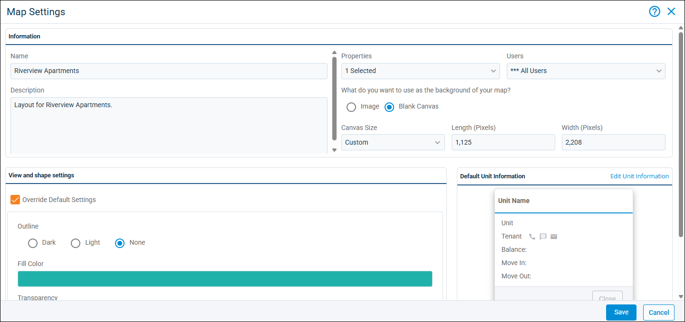

Source: https://rmxhelp.rentmanager.com/Topics/Express/CSH/BEV-Map-Settings.htm
Bird's Eye View (BEV) Map Settings (Pop-Up)
The bird's eye view (BEV) Map Settings pop-up allows you to edit information for your map after a map is created. The settings here can be used to update or change the name of the map, select or deselect properties to which it applies, as well as how the map displays.
Related Privileges
| Group | Privilege | Column |
|---|---|---|
| Bird's Eye View (BEV) | BEV Maps | View, Edit |
For more information, refer to Control User Access.
To view bird's eye view map settings, go to  arrow_forward Rental Info arrow_forward Bird's Eye View (BEV) arrow_forward Manage BEV Maps. Then, on the Manage BEV Maps page, select the map whose settings you want to edit and click
arrow_forward Rental Info arrow_forward Bird's Eye View (BEV) arrow_forward Manage BEV Maps. Then, on the Manage BEV Maps page, select the map whose settings you want to edit and click  arrow_forward Settings.
arrow_forward Settings.

Information Field Descriptions
The following fields display in the Information tile.
| Field | Description |
|---|---|
|
Description |
Details regarding what the BEV map is for. |
|
Name |
The name assigned to the BEV map. |
|
Properties |
The properties associated with map. |
|
Users |
The users with access to view the BEV map. |
For the What do you want to use as the background of your map? field, the following options display:
| Option | Description | |||||
|---|---|---|---|---|---|---|
|
Blank Canvas |
The following options are available. |
|||||
|
||||||
|
Image |
The image to be used as the background of the map. |
View and Shape Settings
The values in the View and shape settings tile automatically populate from the Default Map Settings pop-up. To override the default values for this map, click Override Default Fields.
| Field | Description |
|---|---|
|
Fill Color |
The color to fill the shape or pin for all units that do not have a color assigned directly from the shape or pin. |
|
Map view |
The map view overlay that displays by default when viewing this BEV map. The view that you select determines the colors and legend of the map that displays. For example, a map view for balance due may change the unit pin or shape colors to green, yellow, and orange to show which units owe higher balances. |
|
Outline |
The color of the outline for each unit shape or pin: Dark (black) or Light (white). To show no outline, select None. |
|
Pin Size |
How large the unit's pin displays on the map. This option displays only for maps that are use pins to mark units. |
|
Transparency |
The level of opacity for the selected Fill Color of all unit shapes or pins. You can set this from the slider or by entering a percentage in the associated field. 100% transparency means the color is completely opaque, while 0% means the color is completely transparent. |
|
What information do you want to jump to when viewing your map? |
When viewing the map, you can click a unit and a button displays to jump to another page for more information. This option determines if that button jumps to the details page for the associated tenant, unit, unit type, or property. |
Default Unit Information
The Default Unit Information section provides a preview of the information that displays when a unit on the map is selected. For more information on what fields are available for customization, refer to Edit Bird's Eye View (BEV) Default Unit Information (Pop-Up).